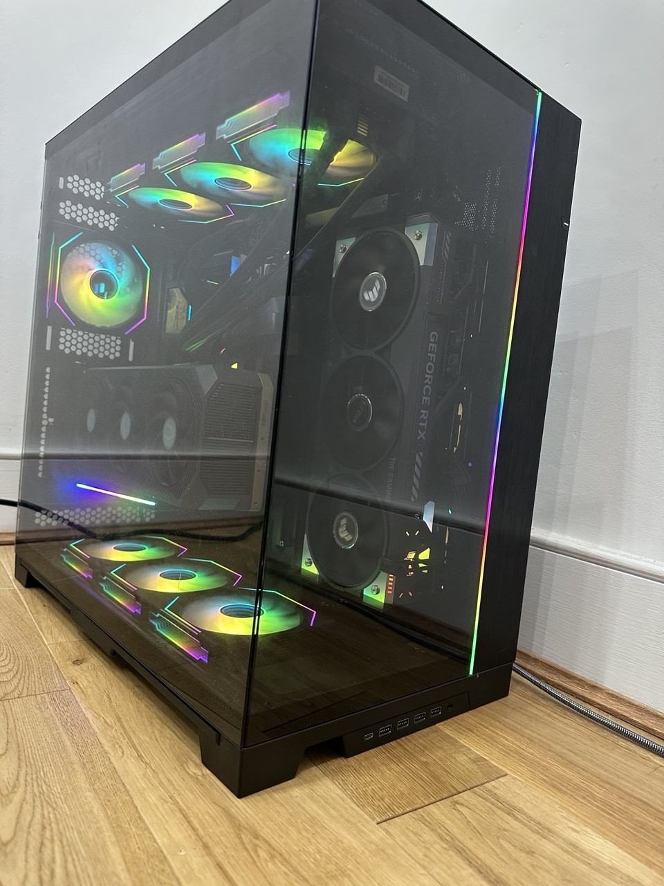
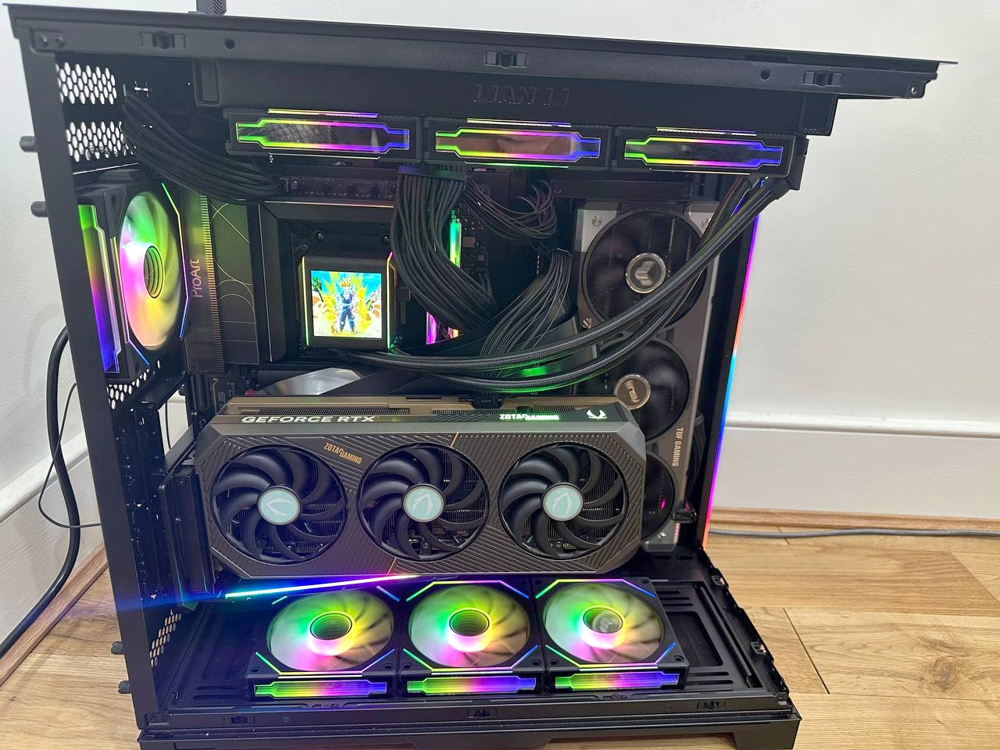
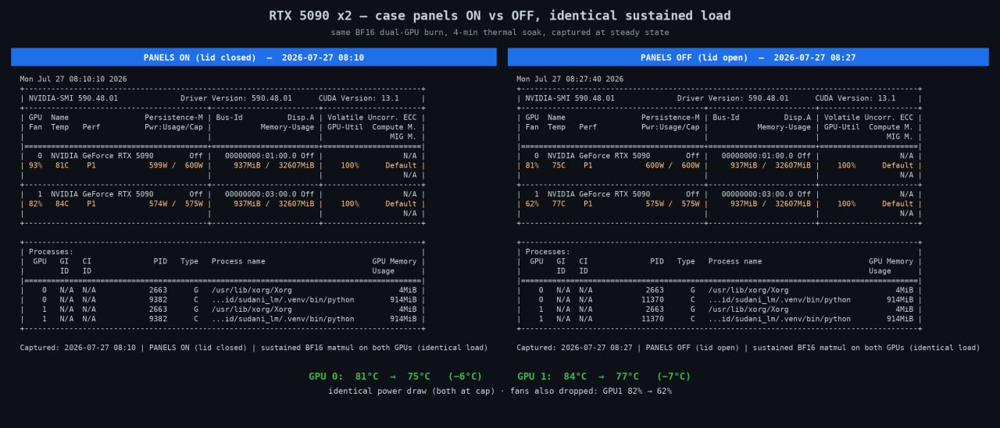

Building an AI workstation, or renting?
Short answer: BOTH. Let me explain.
Imagine it’s eleven at night and I want to rerun a pretraining config with a different vocabulary size. Nothing rides on it, I’m curious about the shape of the loss curve. On a rented GPU that thought comes with a second half attached: price the instance, estimate the hours, decide whether a shrug-shaped answer is worth the money. Usually I went to bed instead. And when I did run things, the meter changed the experiment itself. The sweep got narrower, the sequence length came down, and I wanted the run to finish, because finishing is what stops the charge.
A machine in the corner of the room has no opinion about how long anything takes. So I run far more things that don’t work now, and the things that don’t work are where most of the learning is.
There were two other reasons. I wanted to understand the hardware properly, below the API surface and the memory number. And I wanted somewhere to write CUDA kernels, which is a compile->run->measure->throw-it-away->and-repeat loop that fits rented hardware terribly.
The rule I ended up with is simple:
- Small runs, the ones I’m learning from ⇒ JDI.
- Anything that needs to scale past two cards (mostly comes after initial experiments on JDI) ⇒ rent a cluster.
Knowing where that line sits is itself something owning the machine taught me. Two cards at home is a bet that most of what I want to do fits in 64GB of VRAM and runs for days, not for a fortnight across eight cards. Renting still wins for a shape I can’t buy.
What it costs
| Component | Model | Price |
|---|---|---|
| GPU | ASUS GeForce RTX 5090 32GB TUF Gaming OC | £2,639.10 |
| GPU | Zotac GeForce RTX 5090 32GB | £2,900.00 |
| RAM | G.Skill Trident Z5 Neo RGB 64GB (2x32GB) DDR5-6000 CL30 | £599.99 |
| PSU | MSI MEG Ai1600T PCIE5, 1600W | £507.00 |
| Motherboard | ASUS ProArt X870E-Creator WiFi | £494.99 |
| CPU | AMD Ryzen 9 9950X | £487.86 |
| Storage | Samsung 990 PRO 2TB | £228.30 |
| CPU cooler | Lian Li Galahad II LCD-SL 360 | £223.94 |
| Case | Lian Li O11D EVO XL | £198.94 |
| Fans | Lian Li UNI SL120 INF, 3x | £75.49 |
| Fans | Lian Li UNI SL120 INF, 3x | £75.49 |
| Fan | Lian Li UNI SL120 Reverse, 1x | £29.98 |
| Riser cable | 40cm, Gen 5 | £97.00 |
| GPU mount | Vertical | £78.71 |
| GPU mount | Upright | £20.00 |
| KVM switch | £89.99 | |
| Keyboard | £71.00 | |
| Total | £8,817.78 |
The two cards are £5,539.10 of that (a shade under 63%). That ratio is the honest summary of the whole exercise: it’s a pair of GPUs with a computer attached, and everything else in the table exists to feed them, cool them, or store what they produce.
My experience during this build
1. The thermal problem
The Lian Li O11D EVO XL is a good case. It’s also reviewed, almost everywhere, against a workload that has nothing to do with mine.
Most people use this case for gaming with one GPU. I’m using it for much longer runs with two. The two cards alone draw almost 1,200W at their caps. Add the CPU and it’s the thick end of 1,350W, essentially all of it coming back out as heat into one room in a London flat. The machine is a 1.3kW heater that occasionally trains a language model.
Thankfully, there is the simple solution of taking the panels off when running both GPUs.

Same sustained BF16 matmul on both cards, four minutes of thermal soak, captured at steady state. Power draw was pinned to the cap in both runs, so nothing was throttling and the comparison is clean.

| GPU 0 | GPU 1 | |
|---|---|---|
| Panels on | 81°C, fan 93% | 84°C, fan 82% |
| Panels off | 75°C, fan 81% | 77°C, fan 62% |
| Difference | 6°C, 12 points of fan | 7°C, 20 points of fan |
The temperatures are the headline, but the fan speeds are the more interesting number. The sealed case was running hotter and spending 20 more points of fan to get there, which is noise I have to sit next to and bearings I have to replace eventually.
Verdict: I don’t think it’s a bad case. Two cards this size in a sealed glass box is probably a heat problem you can’t fan your way out of, and there’s something faintly ridiculous about buying a case sold on its airflow and then running it with half the enclosure on the floor. Would a mesh case have fixed it? I don’t know. Would liquid-cooled GPUs have fixed it? Probably, but haven’t I already spent enough? On a cloud instance, thermals are somebody else’s problem, expressed to me as a price per hour. Here they’re mine.
(There’s an LCD on the pump head, and I have Gohan going Super Saiyan on it. He spends the whole scene screaming and drawing an absurd amount of power to do one specific thing, which is more or less the machine’s entire personality.)
2. Power delivery is the one spec you get a single shot at
Everyone talks about the GPU. The component I ended up understanding properly was the boring grey box at the bottom.
It’s an MSI MEG Ai1600T PCIE5: 1600W, 80+ Titanium, up to 94% efficient. I didn’t know what most of that meant when I started. The specification that turned out to matter is the dull one: two native 12V-2x6 connectors, each rated to 600W. Native means an actual cable from the supply to the card, with no adapter and no two 8-pins bodged into a dongle in between. The 12V-2x6 is a revision of the older 12VHPWR connector with shorter sense pins, and the only reason that revision exists is that the previous one could melt when it wasn’t pushed all the way home. You can stay comfortably unaware of that right up until you’re the person plugging it in.
That part wasn’t luck. I specced the supply already knowing I wanted two 5090s in this machine, which is why the connector count mattered as much as the wattage.
None of which stopped me destroying one.
I had the supply running off a cheap extension lead instead of straight into the wall. Suddenly there was a bang, the machine went dead, and the PSU was cooked. Everything else survived, which I put down to luck rather than anything I’d done. The replacement went directly into a wall socket and has stayed there. Roughly £500 to learn that the thing standing between a 1.3kW draw and the mains is NOT the place to improvise, and there is no version of this where I get to blame the hardware.
Verdict: power delivery and connector count decide whether a machine can grow, and they’re the specs you can’t change later without pulling the whole build apart. Cores and memory you can argue about afterwards. Buying compute by the hour, you never once think about a connector standard. Somebody else takes on the physical layer and hands you a device string, and in exchange you stay slightly ignorant of what’s underneath it, forever.
3. A second GPU is a clearance problem before it’s anything else
In the cloud, adding a GPU is an edit to a config file. Here it’s a question of clearance. Two cards that size don’t sit next to each other in a way that lets either of them breathe, so the second one goes somewhere else in the case entirely. That means a bracket to hold it, a second bracket to hold it at the right angle, and a cable long enough to reach the slot it’s no longer sitting in.
An upright mount, £20.00. A vertical mount, £78.71. A 40cm riser cable, £97.00. Ninety-seven pounds. For a cable. I checked the order twice. A Gen 5 riser has to hold impedance and shielding together at 32 GT/s per lane, and the cheap ones don’t fail by refusing to work. They fail by quietly downgrading your link or throwing artifacts, which is how £97 stops looking like a typo and starts looking merely expensive.
So: £195.71 in brackets and cable, to mount a card I already had.
I then broke the vertical mount getting the card into it. Too much force on a latch that didn’t want to move, on a day when I should probably have stopped and come back to it, and the lock snapped. What broke was a bracket rather than the card sitting in the bracket, which is the only reason I can tell that story lightly.
How I planned the build
Almost all the specification work happened on PCPartPicker: you build the list, it tells you what’s incompatible, and it prices each part across vendors. Probably the best site there is for this. After that it was three videos, a general build guide, one for this exact case, and one for this exact motherboard. Someone assembling the specific board in front of you beats any amount of general advice, because the thing you’re unsure about at 9pm is which of two nearly identical headers the front panel cable goes into.
Assembly is not too difficult. The parts are expensive enough to make you slow and careful, and slow and careful is the correct speed. Both of the things I broke, I broke by not being either.
References
Everything I actually used to plan and build this.
Picking the parts
- PCPartPicker UK. Compatibility checking and per-part pricing across vendors. This did most of the work.
- PCSpecialist. The same idea for a full prebuilt, useful as a price sanity check.
Building it
- General build guide. The one I’d point a first-time builder at.
- Lian Li O11D EVO XL build. This exact case. Worth watching twice, once for routing and once for mounting points.
- ASUS ProArt X870E-Creator walkthrough. This exact motherboard.
Background on the parts that surprised me
- Why 12V-2x6 connectors fail. The connector revision, and why full seating matters.
- 12VHPWR investigation. The longer version of the same story.
- Choosing a PCIe 5.0 riser. What the money buys at 32 GT/s per lane, and how the cheap ones fail.
The two parts worth reading up on before you buy
- AMD Ryzen 9 9950X specifications. Sixteen cores, 32 threads, and the 170W TDP that decides your cooler.
- MSI MEG Ai1600T PCIE5 review. An independent test of the supply, rather than the manufacturer’s own page.